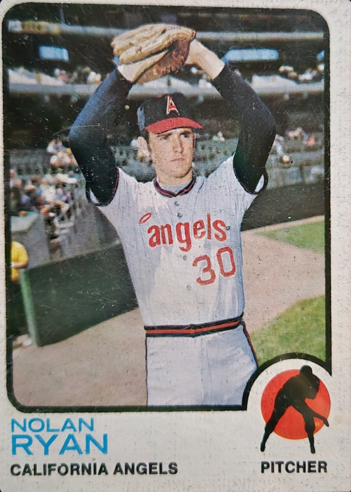

Immortal
The Year the Ryan Express Arrived

This pristine 1973 Topps #220 captures Nolan Ryan at the dawn of his most terrifying era with the California Angels. Turn it over, and the back hints at the sheer dominance of his 1972 season. But true historians know what was coming next: 1973 was the year Ryan would unleash an untouchable
100-mph fastballshattering the single-season record with a mythical 383 strikeouts.
When you hold this card, you can almost hear the agonizing pop of the catcher’s mitt. You can feel the quiet dread of the batter stepping into the box, knowing they didn’t stand a chance.
The Seven
No pitcher in the history of the game has ever come close. Seven times, Nolan Ryan stepped onto the rubber and simply refused to give up a single hit.
Finding this card in Excellent condition isn’t just a rare pull—it’s an anchor piece for the serious curator. Don't let a piece of raw baseball mythology slip through your fingers.